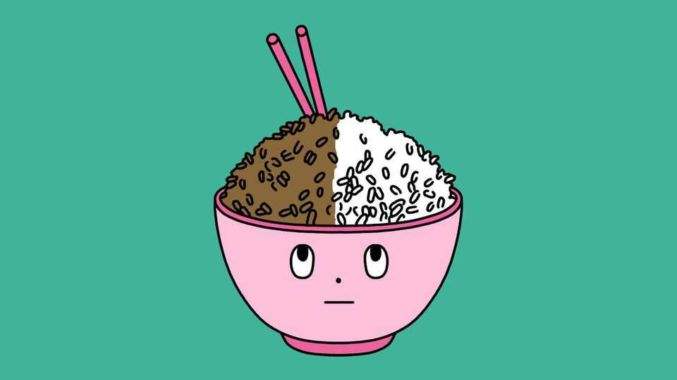

Is brown rice really healthier than white rice?
The scientific evidence goes against the grain

Nov 5th 2026
RICE SUPPLIES nearly a fifth of the world’s calories. Which sort, though, is healthiest? Brown rice becomes white when milling removes its fibrous outer layer (known as the bran), and nutrient-rich seed embryo (the germ), so nutritional lore naturally favours the former. Indeed, some striking findings seem to support that preference. Look closer, though, and the colour of rice may not be what matters most.
Rice is rich in starch, which digestion turns into glucose, or blood sugar. If the body struggles to regulate it, type-2 diabetes can eventually develop. Consider a review of eight observational studies that tracked the diets and health of 577,426 people. Writing in BMJ Open in 2022, the researchers calculated that once daily consumption exceeded about two 158-gram servings of cooked white rice, each additional serving was linked to a 13% higher risk of the disease.
Brown rice, meanwhile, appears to offer some protection. Fibre in the bran slows the breakdown of starch, so glucose enters the bloodstream more gradually. The bran and germ also contain magnesium, B vitamins and other nutrients that may help the body regulate blood sugar. A paper in Archives of Internal Medicine in 2010, included in the 2022 review, analysed three studies that followed 197,228 Americans for 14 to 22 years. Modelling suggested that replacing 50 grams of cooked white rice a day with brown rice was linked to a 16% lower risk of type-2 diabetes.
Correlation, though, is not causation. People who prefer brown rice tend to smoke less, exercise more and eat healthier food overall. Although the authors of the papers from 2022 and 2010 attempted to account for such confounding lifestyle differences, they acknowledged that their findings could still be skewed. So what happens when researchers actually instruct people to eat brown rather than white rice?
Not much. The 2022 review also examined 11 randomised controlled trials involving 1,034 participants. Those assigned to eat brown rice showed no statistically significant improvements in their short- or longer-term control of blood sugar. There was also no clear evidence of improved sensitivity to insulin, which helps cells absorb glucose. Nor did the trials consistently find improved blood pressure.
What matters more for blood sugar than rice’s colour, it turns out, is how much of a starch called amylose it contains. Amylose resists rapid digestion, so it limits spikes in blood sugar. A review of 32 randomised controlled trials published in 2015 identified amylose content—which is largely a function of a rice’s variety—as “the most consistently important” determinant of how sharply rice raises blood sugar.
Processing matters, too. Parboiling—soaking and steaming rice before milling—moves B vitamins from the bran into the grain while making its starch more resistant to digestion. An experiment reported in Nutrition in 2018 found that, among people without diabetes, eating parboiled rather than ordinary white rice reduced the cumulative rise in blood sugar over the following two hours by 38%. It also appeared to have an edge over ordinary brown rice.
A similar trick can be performed at home. Refrigerating cooked rice, whether brown or white, alters some of its starch so that it is digested more slowly. Care, though, is needed: to limit bacterial growth, rice should be cooled within an hour and reheated only once, until steaming hot, within a day.■
After a free, evidence-based guide to health and wellness? Sign up to our weekly Well Informed newsletter.